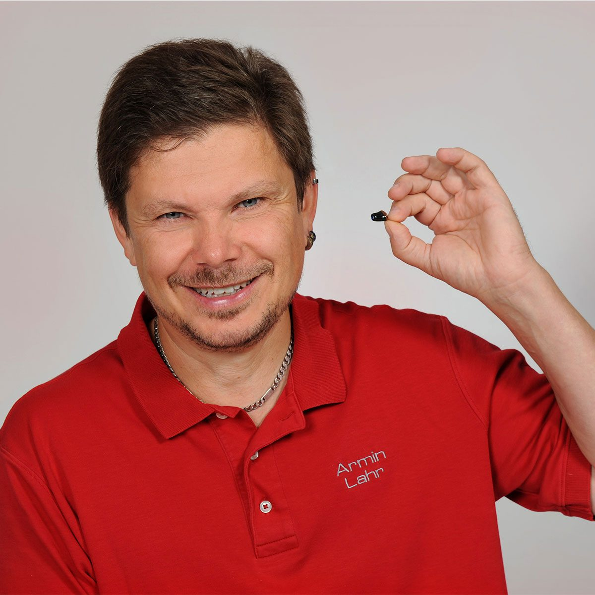
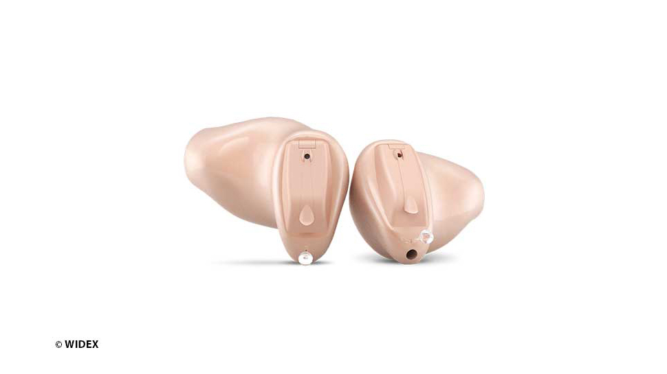
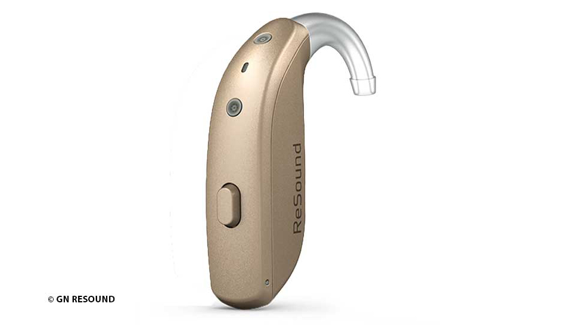
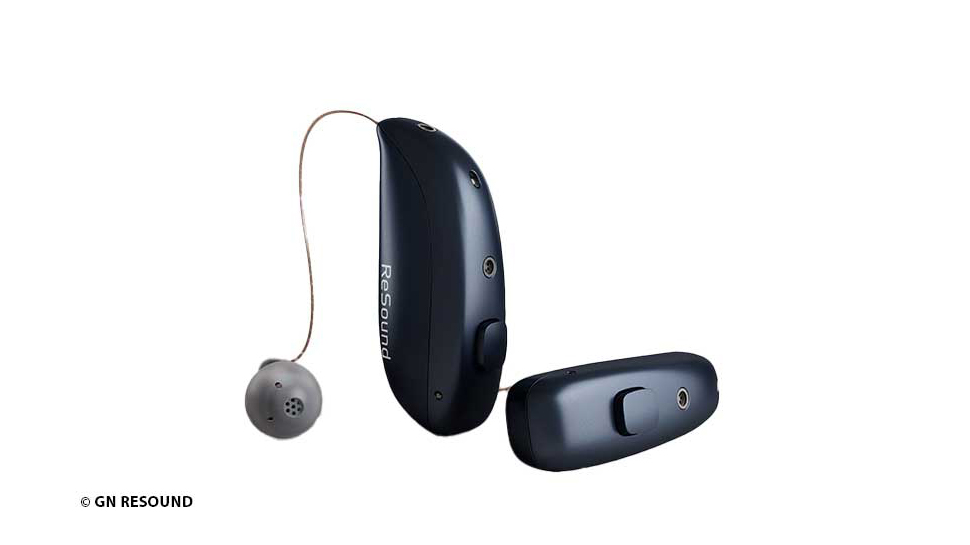
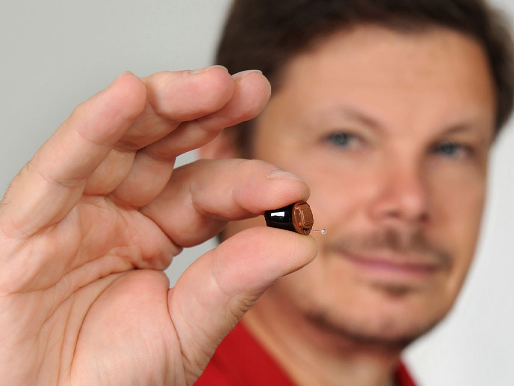
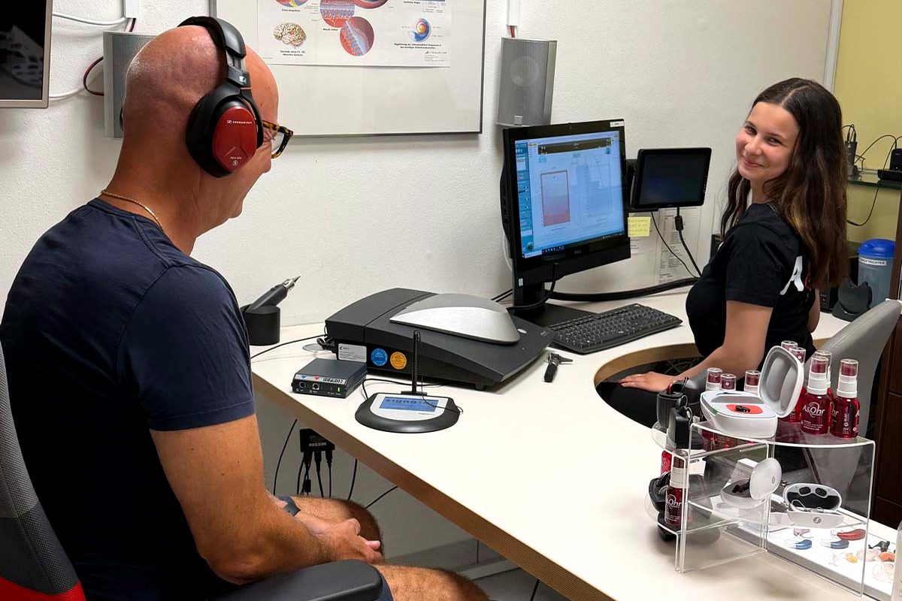

Hörakustik-Meisterbetrieb in Kaufbeuren & Füssen
Besser hören.
Besser leben.
Wir nehmen uns Zeit für Ihr Gehör – mit kostenlosem Hörtest, persönlicher Beratung und Probetragen im eigenen Alltag.
100 % kostenloser Hörtest – so läuft er ab
- Hörtest kostenlos und unverbindlich
- Probetragen in Ihrem gewohnten Alltag
- Kostenfreie Nachbetreuung inklusive
- Service auch für Hörgeräte von anderen Anbietern
So läuft es bei uns
In vier Schritten zu besserem Hören
Ohne Druck und in Ihrem Tempo. Sie entscheiden bei jedem Schritt selbst.
- 1
Hörtest
Kostenlos und unverbindlich – mit einer verständlichen Auswertung Ihres Hörvermögens.
- 2
Beratung
Wir zeigen Ihnen, welche Hörsysteme für Sie in Frage kommen – passend zu Ihren Wünschen.
- 3
Probetragen
Sie testen die Geräte einige Wochen in Ihrem gewohnten Alltag – ohne Verpflichtung.
- 4
Nachbetreuung
Wir reinigen, prüfen und stellen Ihre Geräte auf Ihre aktuelle Hörkurve ein – kostenfrei.
Hörgeräte
Welches Hörgerät passt zu Ihnen?
Drei Bauformen, viele Möglichkeiten. Wir finden mit Ihnen das Gerät, das zu Ihrem Ohr und zu Ihrem Alltag passt.

Im Ohr (IdO)
Maßgefertigt und kaum sichtbar – unsere Spezialität. Mehr erfahren
Hinter dem Ohr (HdO)
Bewährt, leistungsstark und einfach zu bedienen. Mehr erfahren
Hörer im Ohr (RIC)
Klein, unauffällig und mit natürlichem Klang. Mehr erfahrenWir arbeiten mit Hörsystemen von Signia, ReSound, Widex und NuEar. Was kostet ein Hörgerät?

Service
Service für alle Hörgeräte – egal, wo Sie sie gekauft haben
Unsere kostenlosen Serviceleistungen stehen Ihnen offen. Nach Durchsicht und Wartung stellen wir Ihre Geräte auf Ihre aktuelle Hörkurve ein.
- Reinigung für besseren Klang
- Überprüfung und Einstellung
- Austausch von Verschleißteilen
Zubehör, Batterien und Pflegemittel erhalten Sie bei uns im Geschäft.
Alle ServiceleistungenGehörschutz nach Maß
Schützen Sie Ihr Gehör – bei der Arbeit, in der Freizeit und auf der Bühne
Freizeit
Für Konzert, Motorsport und laute Umgebungen.
Arbeit
Für Betriebe – individuell für Ihre Mitarbeiter.
Musiker
In-Ear-Monitoring für Bühne und DJ-Pult.
Wasser
Schwimm- und Spritzwasserschutz für empfindliche Ohren.
Unternehmen wie die Aktienbrauerei Kaufbeuren, Haff & Schneider und Uniper setzen auf Gehörschutz von A&Ohr. Referenzen
Über uns
Bei uns sind Sie keine Nummer
Unser geschultes Fachpersonal nimmt sich die Zeit, die Sie brauchen – gezielt und auf Ihre Wünsche eingehend.
Als Hörakustik-Meisterbetrieb sind wir in Kaufbeuren und Füssen für Sie da – und engagieren uns für Sport, Kultur und Gesellschaft in der Region.
Lernen Sie uns kennen